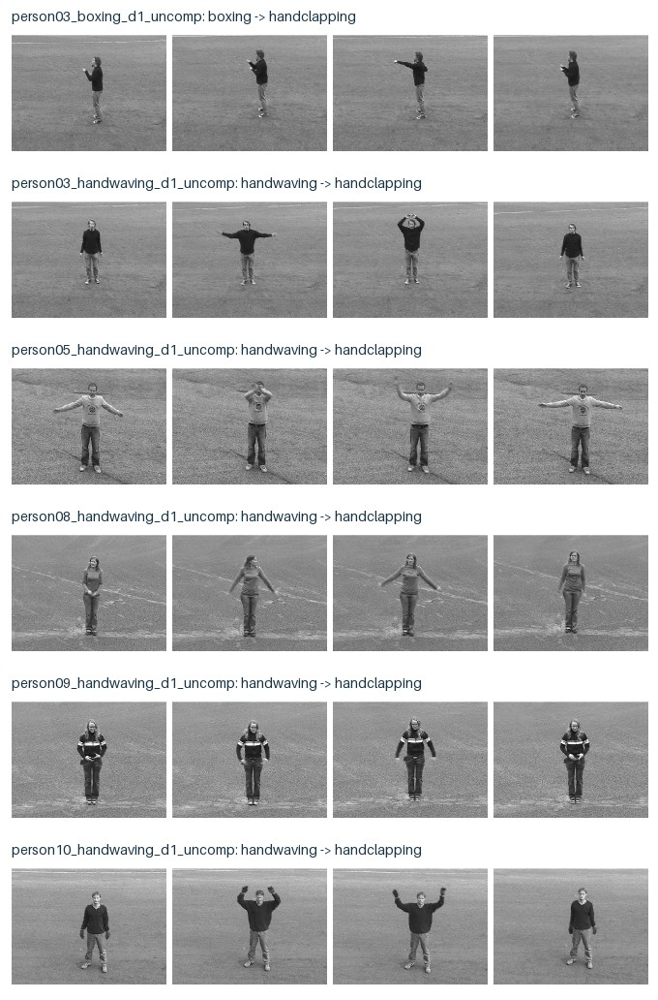

KTH 三类动作、d1 场景、整段 AVI；使用官方人物划分。文本由动作标签转成固定英文描述。
{'val': 24, 'test': 27, 'train': 24}
| 模型 | 种子 | 可训练参数 | 视频→文本 R@1 | 文本→视频 R@1 | 打乱帧后 |
|---|---|---|---|---|---|
| frozen_clip_mean | — | 0 | 33.3% | 66.7% | — |
| frozen_clip_middle_frame | — | 0 | 37.0% | 66.7% | — |
| mean | 17 | 32832 | 74.1% | 100.0% | 74.1% |
| mean | 42 | 32832 | 63.0% | 100.0% | 63.0% |
| mean | 123 | 32832 | 70.4% | 100.0% | 70.4% |
| mlp | 17 | 129263 | 74.1% | 66.7% | 74.1% |
| mlp | 42 | 129263 | 70.4% | 100.0% | 70.4% |
| mlp | 123 | 129263 | 74.1% | 100.0% | 74.1% |
| gru | 17 | 129472 | 74.1% | 66.7% | 66.7% |
| gru | 42 | 129472 | 74.1% | 100.0% | 70.4% |
| gru | 123 | 129472 | 77.8% | 100.0% | 70.4% |
## 跨种子汇总（视频→文本 R@1） - mean：均值 69.1%，种子间标准差 4.6%。 - mlp：均值 72.8%，种子间标准差 1.7%。 - gru：均值 75.3%，种子间标准差 1.7%。 ## 固定展示的失败案例 使用预先列出的第一个 GRU 种子，不按测试分数挑选运行。以下为其误检： - person03_boxing_d1_uncomp：真实 boxing → 预测 handclapping。 - person03_handwaving_d1_uncomp：真实 handwaving → 预测 handclapping。 - person05_handwaving_d1_uncomp：真实 handwaving → 预测 handclapping。 - person08_handwaving_d1_uncomp：真实 handwaving → 预测 handclapping。 - person09_handwaving_d1_uncomp：真实 handwaving → 预测 handclapping。 - person10_handwaving_d1_uncomp：真实 handwaving → 预测 handclapping。 - person22_handwaving_d1_uncomp：真实 handwaving → 预测 handclapping。 ## 解释边界 - MLP 对帧顺序不敏感，参数量与 GRU 接近，用于控制模型容量因素。 - 测试集不用于选择训练轮数或超参数；每个运行都由验证集选择检查点。 - 同一人物的所有动作仅处于一个 split；未将同源视频随机拆到多个集合。 - 三类文本候选下 R@5/R@10 没有区分价值，因此主表仅展示 R@1。 - 文本→视频有多个正确视频；其 R@1 不等于视频分类准确率。 - 没有显式动作顺序对照标注，因此不计算顺序准确率。打乱帧仅为诊断。 - 同一划分的三个种子不代表跨数据集置信区间；小测试集结果应谨慎外推。 - 结果提升还需更大数据、更多动作和背景变化验证；如 GRU 不优于 MLP，应如实保留该结论。 数据：[KTH 官方来源](https://www.csc.kth.se/cvap/actions/)，仅非商业使用；引用 Schuldt、Laptev、Caputo，ICPR 2004。
每行从原视频均匀抽取四帧；标签来自数据集，预测来自该次测试。
